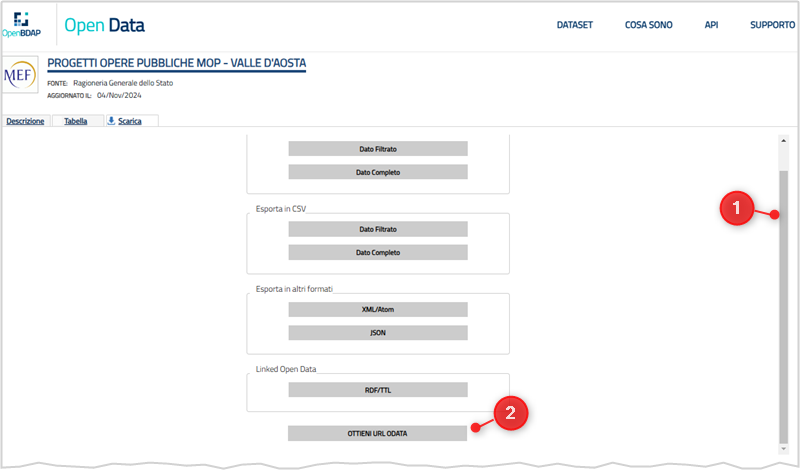

OpenBDAP
Il portale della Ragioneria Generale dello Stato
OpenBDAP è il portale della Ragioneria Generale dello Stato che consente di scoprire le tematiche della Finanza Pubblica, di esplorare i dati presenti all’interno della Banca Dati delle Amministrazioni Pubbliche e di analizzare i risultati frutto di elaborazioni personalizzate.
I dati correlati al PNRR
OpenBDAP pubblica delle estrazioni dalla banca dati BDAP/MOP, in cui sono inseriti anche i dati del monitoraggio degli interventi finanziati solo con risorse nazionali del PNC - Piano nazionale per gli investimenti complementari al Piano nazionale di ripresa e resilienza (PNC). Il sistema ReGiS e BDAP si alimentano a vicenda.
Esiste anche il catalogo Open Data di OpenBDAP.
Non ci sembra che attualmente in questi portale ci siano dei dati “etichettati” come PNRR o PNC.
È possibile però fare ricerche ad esempio per CUP.
Ricercare per CUP tramite interfaccia web
Nella sezione “Come pubblicare sui siti Istituzionali delle Amministrazioni Pubbliche i collegamenti ipertestuali ai dati contenuti nella BDAP”, viene indicato l’URL per esplorare le opere pubbliche di una Pubblica Amministrazione, a partire dal suo Codice Fiscale.
Questo ad esempio quello dell’ANAS (80208450587 è il suo codice fiscale):
https://openbdap.rgs.mef.gov.it/BO/OpenDocument?modalita=link&docID=FgAUHFlfxgsAFwYAAACHAiUbeOO1D67w&T=BusinessObject &idType=CUID&noDetailsPanel=true&X_Ente=80208450587
➡️ NOTA BENE: in questa pagina in alto a destra è presente il link alla “RICERCA PER CUP”. In questo percorso alla ricerca dei dati relativi al PNRR ci sarà utile.

Al click su “RICERCA PER CUP” si apre il form dedicato (vedi Figura 2).

In questo form è possibile inserire uno o più codici CUP separati da ; (non più di 300), e poi fare click sul tasto “Mostra CUP”.
In output una tabella con i risultati della ricerca, di cui è possibile fare il download in formato Excel.

Il foglio elettronico di output è suddiviso in tre fogli:
Dettaglio CUP;Dettaglio CIG;Dettaglio Indicatori.
Quindi per estrarre da OpenBDAP dei dati relativi al PNRR, si può ancora una volta usare l’elenco dei CUP del Focus PNRR di OpenCUP, come elemento di filtro.
Purtroppo non più di 300 CUP per volta.
Qui un esempio di output.
Se vuoi fare delle proposte su questo vademecum, se vuoi raccontarci come l’hai usato, se hai bisogno di aiuto in merito, ecco come fare.
Ricerca per CUP machine to machine nel catalogo Open Data
Nel catalogo Open Data di OpenBDAP è possibile fare ricerche tramite protocollo OData: sono un insieme di regole e protocolli che permettono di accedere e manipolare dati tramite richieste HTTP. Consentono di interrogare un database online e ottenere i dati in un formato leggibile, come JSON o XML, facilitando l’integrazione e l’uso dei dati in diverse applicazioni.
Se si apre un dataset del catalogo OpenBDAP, come ad esempio “Progetti Opere Pubbliche MOP - Valle d’Aosta”, nella sezione “Scarica”, scorrendo la scroll-bar verso il basso, si trova il link “OTTIENI URL ODATA” (vedi Figura 4).

Al click su questo, e poi scorrendo di nuovo verso l’alto, si ottiene un URL come questo:
https://bdap-opendata.rgs.mef.gov.it//ODataProxy/MdData('6c0df564-f95d-4d48-9a39-b70146131722@rgs')/DataRows?$skip=0&$top=10In questo diverse sezioni:
MdData('6c0df564-f95d-4d48-9a39-b70146131722@rgs')è l’identificativo del dataset;DataRowsè la tabella dei dati (le righe);?$skip=0indica di saltare 0 righe;&$top=10indica di estrarre al massimo 10 righe.
Ecco un esempio di una riga di output, in cui si può leggere lo schema dei dati:
<?xml version="1.0" encoding="utf-8"?>
<feed xmlns="http://www.w3.org/2005/Atom"
xmlns:m="http://schemas.microsoft.com/ado/2007/08/dataservices/metadata"
xmlns:d="http://schemas.microsoft.com/ado/2007/08/dataservices" xml:base="http://bdap-opendata.rgs.mef.gov.it/Proxy.svc/">
<title type="text">2-'6c0df564-f95d-4d48-9a39-b70146131722@rgs'</title>
<id>http://bdap-opendata.rgs.mef.gov.it/Proxy.svc/MdData('6c0df564-f95d-4d48-9a39-b70146131722@rgs')/DataRows</id>
<updated>2024-11-13T13:19:13Z</updated>
<link rel="self" title="2-'6c0df564-f95d-4d48-9a39-b70146131722@rgs'" href="2-'6c0df564-f95d-4d48-9a39-b70146131722@rgs'"></link>
<m:count>0</m:count>
<entry>
<id>http://bdap-opendata.rgs.mef.gov.it/Proxy.svc/2-'6c0df564-f95d-4d48-9a39-b70146131722@rgs'('row_id')</id>
<title type="text"></title>
<updated>2024-11-13T13:19:13Z</updated>
<author>
<name></name>
</author>
<link rel="edit" title="2-'6c0df564-f95d-4d48-9a39-b70146131722@rgs'" href="2-'6c0df564-f95d-4d48-9a39-b70146131722@rgs'('row_id')"></link>
<category term="http://odata.statportal.it.2-'6c0df564-f95d-4d48-9a39-b70146131722@rgs'" scheme="http://schemas.microsoft.com/ado/2007/08/dataservices/scheme"></category>
<content type="application/xml">
<m:properties>
<d:row_id m:type="Edm.Int32">0</d:row_id>
<d:Cccodice_locale1983787008>1LO#LOMBGEFO-00000000000047020207</d:Cccodice_locale1983787008>
<d:Cccodice_cup_1267962549>B54H14001840005</d:Cccodice_cup_1267962549>
<d:Ccdescrizione_cu902475141>ALTA VIA 1 E 2 MULATTIERA MILITARE STORICA PASSO DEL TURLO*VIA VARI*INTERVENTI INFRASTRUTTURALI DI SENTIERISTICA</d:Ccdescrizione_cu902475141>
<d:Cccodice_stato_1426672593>C</d:Cccodice_stato_1426672593>
<d:Ccdescrizione_s1176782119>CHIUSO</d:Ccdescrizione_s1176782119>
<d:Ccdata_inizio_va158409080>2015-02-26</d:Ccdata_inizio_va158409080>
<d:Ccdata_fine_val1549404726>2017-12-13</d:Ccdata_fine_val1549404726>
<d:Ccdescrizione_ti177583083>REGIONE AUTONOMA VALLE D'AOSTA</d:Ccdescrizione_ti177583083>
<d:Cccodice_fiscal1934873127>80002270074</d:Cccodice_fiscal1934873127>
<d:Cccodice_ente_652186435>476042930535072001</d:Cccodice_ente_652186435>
<d:Ccdescrizione_e1495819219>REGIONE AUTONOMA VALLE D'AOSTA</d:Ccdescrizione_e1495819219>
<d:Cccodice_natura_904054865>03</d:Cccodice_natura_904054865>
<d:Ccnatura_interve446219799>REALIZZAZIONE DI LAVORI PUBBLICI (OPERE ED IMPIANTISTICA)</d:Ccnatura_interve446219799>
<d:Cccodice_tipolo1925290846>0307</d:Cccodice_tipolo1925290846>
<d:Cctipologia_inte917995560>MANUTENZIONE STRAORDINARIA</d:Cctipologia_inte917995560>
<d:Cccodice_settore167988668>02</d:Cccodice_settore167988668>
<d:Ccsettore_inter1475973826>INFRASTRUTTURE AMBIENTALI E RISORSE IDRICHE</d:Ccsettore_inter1475973826>
<d:Cccodice_sottose852967247>0211__</d:Cccodice_sottose852967247>
<d:Ccsottosettore_i327509803>PROTEZIONE, VALORIZZAZIONE E FRUIZIONE DELL'AMBIENTE</d:Ccsottosettore_i327509803>
<d:Cccodice_categor603999167>0211__124_</d:Cccodice_categor603999167>
<d:Cccategoria_inte847681723>STRUTTURE PER LA FRUIZIONE DEL PATRIMONIO AMBIENTALE</d:Cccategoria_inte847681723>
<d:Ccinizio_progetta77930296></d:Ccinizio_progetta77930296>
<d:Ccfine_progetta1599384906></d:Ccfine_progetta1599384906>
<d:Ccinizio_progett179140555></d:Ccinizio_progett179140555>
<d:Ccfine_progetta1715553716></d:Ccfine_progetta1715553716>
<d:Ccinizio_esecuz2103627579></d:Ccinizio_esecuz2103627579>
<d:Ccfine_esecuzion606478841></d:Ccfine_esecuzion606478841>
<d:Ccinizio_esecuzi167207395></d:Ccinizio_esecuzi167207395>
<d:Ccfine_esecuzio1000236773></d:Ccfine_esecuzio1000236773>
<d:Ccinizio_conclu2032086749></d:Ccinizio_conclu2032086749>
<d:Ccfine_conclusi1199057371></d:Ccfine_conclusi1199057371>
<d:Ccinizio_conclus809082107></d:Ccinizio_conclus809082107>
<d:Ccfine_conclusio863189049></d:Ccfine_conclusio863189049>
<d:Ccinizio_funzion952308717></d:Ccinizio_funzion952308717>
<d:Ccinizio_funzio1163938959></d:Ccinizio_funzio1163938959>
<d:Cccosto_lavori_1978461874>0.00</d:Cccosto_lavori_1978461874>
<d:Ccsomme_a_dispo2101248738>0.00</d:Ccsomme_a_dispo2101248738>
<d:Cconeri_investi1975427665>0.00</d:Cconeri_investi1975427665>
<d:Cccosto_lavori_e582037416>0.00</d:Cccosto_lavori_e582037416>
<d:Ccsomme_a_dispo1936647711>0.00</d:Ccsomme_a_dispo1936647711>
<d:Cconeri_investi1729453825>0.00</d:Cconeri_investi1729453825>
<d:Ccfinanziamenti1391929223>34943.95</d:Ccfinanziamenti1391929223>
<d:Ccfinanziamenti_887884618>104831.85</d:Ccfinanziamenti_887884618>
<d:Ccfinanziamenti_756114873>0.00</d:Ccfinanziamenti_756114873>
<d:Ccfinanziamenti_190716726>0.00</d:Ccfinanziamenti_190716726>
<d:Ccaltre_fonti_d2144467400>0.00</d:Ccaltre_fonti_d2144467400>
<d:Ccfinanziamenti_624281149>0.00</d:Ccfinanziamenti_624281149>
<d:Cctotale_econom1259599378>0.00</d:Cctotale_econom1259599378>
</m:properties>
</content>
</entry>
</feed>Tra i campi presenti, Cccodice_cup_1267962549, che dovrebbe essere il campo che contiene il codice CUP. Non ne siamo certi, perché non troviamo una documentazione che spieghi il significato dei campi.
Se si vuole interrogare questo dataset, per avere soltanto le informazioni relative al CUP I77H11000120009, si può fare una richiesta GET con curl:
curl -G "https://bdap-opendata.rgs.mef.gov.it/ODataProxy/MdData('6c0df564-f95d-4d48-9a39-b70146131722@rgs')/DataRows" \
--data-urlencode "$filter=Cccodice_cup_1267962549 eq 'I77H11000120009'"Con $filter=Cccodice_cup_1267962549 eq '\''I77H11000120009'\'' si applica il filtro per estrarre i record in cui il CUP è uguale - eq per equal - a I77H11000120009. La query si può arricchiere e si possono aggiungere più parametri di ricerca.
Questa query corrisponde a questo URL, lanciable direttamente dal browser e che darà l’output nel formato di default, XML: https://bdap-opendata.rgs.mef.gov.it/ODataProxy/MdData('6c0df564-f95d-4d48-9a39-b70146131722@rgs')/DataRows?$filter=Cccodice_cup_1267962549%20eq%20%27I77H11000120009%27
Se si vuole l’output in formato JSON, si può aggiungere --header "Accept: application/json":
curl -G "https://bdap-opendata.rgs.mef.gov.it/ODataProxy/MdData('6c0df564-f95d-4d48-9a39-b70146131722@rgs')/DataRows" \
--data-urlencode "$filter=Cccodice_cup_1267962549 eq 'I77H11000120009'" \
--header "Accept: application/json"È cosa buona poter cercare in questo modo, ma l’utilizzo attuale è scomodo: dato un CUP ad esempio, è infatti necessario sapere prima in quale dataset cercare. Sarebbe importante avere la disponibilità anche di una ricerca globale machine to machine.